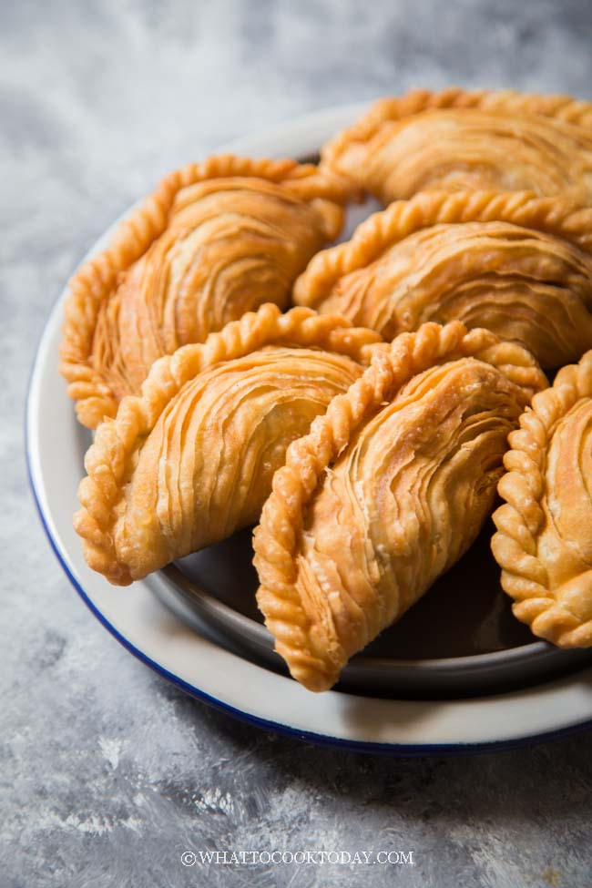
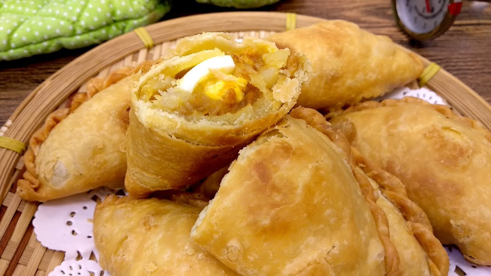

I think I can safely say that most Malaysians love curry puffs because I have yet to meet one who does not. Hence, like all popular food they come in different versions. The filling is more or less the same – curried potato with or without chicken. The crust or pastry however, comes in different forms. |
|
The “king” of curry puffs are the spiral curry puffs, so called because of its beautiful layered pastry. These are usually quite large, almost the size of one’s palm. The curried potato filling normally comes with chicken. In our family, we have also made it with shrimp which is amazingly tasty. |
 |
Grandma’s Spiral Curry PuffsMy Grandma made the most awesome spiral curry puffs which I learned from her when I was in my early teens. We used to make them by the hundreds for the entire clan because everyone in the family loves them. At one point, Grandma even made them for sale and I would help shape the curry puffs. Some day, I will share the recipe with you all. 🙂 |
|
Puff Pastry Curry PuffsThen there are those curry puffs sold at the bakeries and mall made with puff pastry. These are more like mini pies or tarts and probably came about out of convenience. They are usually rectangle in shape. No pleating, which is definitely a time saver. |
|
|  | |